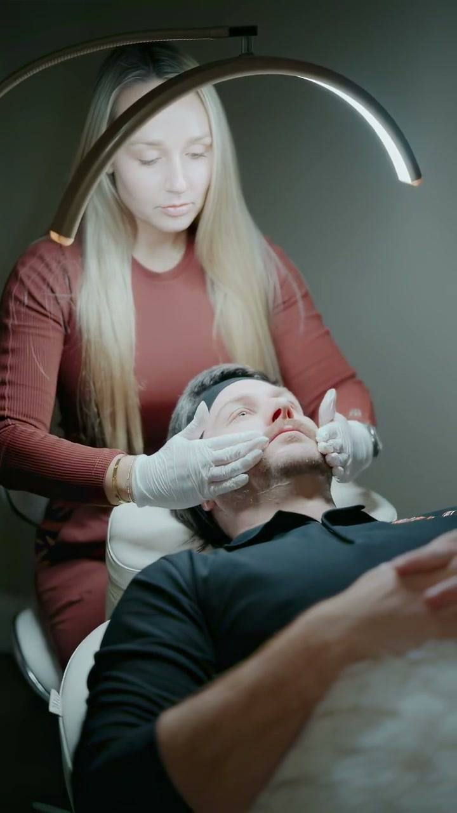

Draft for Katrina’s review. Not published.
The ABK JournalMicroneedling in Charlotte: what to expect, results and aftercare
What microneedling in Charlotte feels like, how many sessions you need, redness and downtime, aftercare and how standard and Enhanced Microneedling differ.
From the ABK SKIN studio
Charlotte, NC · Updated

Microneedling is one of the most requested corrective treatments in Charlotte, and for good reason. It is chosen to improve the appearance of fine lines, acne scarring, enlarged pores, uneven texture and tone by working with your skin's natural renewal process. Changes build gradually, which is why knowing what to expect before, during and after your appointment makes a real difference.
This guide covers how microneedling works, what an appointment at ABK SKIN looks like, how many sessions people usually plan, downtime and aftercare, and how standard Microneedling compares with Enhanced Microneedling.
In short
- Microneedling creates controlled micro-channels in the skin to prompt its natural renewal process.
- At ABK SKIN, Microneedling is about 90 minutes and $395. Enhanced Microneedling adds a targeted professional serum and is $550.
- It is chosen for fine lines, acne scarring, enlarged pores, uneven texture and tone, and loss of firmness.
- Redness afterward is common. Ask at your consultation about downtime for your skin.
- Results build over time, and many people plan a series rather than one visit.
How microneedling works
During microneedling, a professional device makes tiny, controlled micro-channels in the skin. The skin responds by starting its natural renewal process. You will sometimes hear microneedling called collagen induction therapy for this reason.
The micro-channels also give professional serums a direct path into the skin during treatment, which is the idea behind Enhanced Microneedling.
What microneedling can help with
At ABK SKIN, microneedling is chosen to improve the appearance of:
- Fine lines
- Acne scarring
- Enlarged pores
- Uneven texture and tone
- Loss of firmness
It is a gradual treatment. You will not see the full picture right away, because changes build as your skin renews.
Your microneedling appointment at ABK SKIN
| Step | What happens |
|---|---|
| Skin assessment | Your aesthetician looks at your skin and goals before treatment |
| Plan | The right depth, products and plan are chosen for you |
| Microneedling | The device is passed over the treatment area |
| Serums | Serums selected for your skin are applied |
| Aftercare | You go home with guidance for the next few days |
The appointment takes about 90 minutes, according to the ABK SKIN booking menu.
Standard vs Enhanced Microneedling
Both start with the same microneedling base. Enhanced Microneedling adds a professional serum delivered through the micro-channels. Each option is a separate appointment in the ABK SKIN booking menu.
| Microneedling | Enhanced Microneedling | |
|---|---|---|
| Price | $395 | $550 |
| Time | About 90 min | About 90 min |
| Serum | Serums selected for your skin | A targeted professional serum chosen from four options |
| Options | One | PDRN, firming, radiance and hydration |
| Best for | Texture, scarring, pores, fine lines, tone | Clients who want a targeted serum for texture, firmness, tone or dehydration |
The PDRN option is known around Charlotte as the salmon sperm facial. Read the salmon sperm facial guide for the details. If you are not sure which option fits, book a consultation, or book standard Microneedling and ask about upgrading.
Does microneedling hurt?
Comfort varies from person to person and depends on the depth used and the area treated. Ask your aesthetician how they keep you comfortable, and speak up during treatment if you need a pause.
Microneedling downtime
Redness after microneedling is common. Many people describe their skin as looking flushed or sunburned at first. How long it lasts varies with your skin, the depth used and the serum chosen. Ask at your consultation about the downtime you can expect, especially if you have an event coming up.
Because of that redness, avoid booking microneedling right before a wedding, photos or a big presentation. The event facial timing guide can help you plan.
How many microneedling sessions do you need?
Microneedling results build gradually, so many people plan a series. The right number and spacing depend on your goal. Acne scarring and deeper texture usually need more sessions than a general refresh. Your aesthetician will recommend a plan after your skin assessment.
Who should not get microneedling, or should wait
Tell your aesthetician before booking if any of these apply:
- Active acne breakouts, rashes, cold sores or infections in the treatment area
- A recent sunburn
- Use of prescription acne medication now or recently
- Retinoids or exfoliating acids in your routine
- A tendency to scar easily or form raised scars
- Pregnancy or breastfeeding
- Any medical condition or medication that affects healing
If you have a medical condition, check with your doctor first. Your aesthetician may adjust the plan or suggest a different treatment.
How to prepare for microneedling
- Avoid sunburn and heavy sun exposure beforehand.
- Pause retinoids and strong exfoliants if your aesthetician asks you to.
- Arrive with clean skin if you can.
- Plan a quieter day or two afterward, with no event photos.
Microneedling aftercare
Your skin has fresh micro-channels after treatment, so the first days matter.
| Do | Avoid |
|---|---|
| Follow your aesthetician's instructions first | Makeup until you're told it's OK |
| Cleanse gently with clean hands | Exfoliating acids, scrubs and retinoids for several days |
| Hydrate with calming products like Restorative HA Serum | Hot yoga, saunas and heavy workouts right away |
| Mist with Hyacyn Active to soothe | Swimming pools and hot tubs at first |
| Wear mineral sunscreen daily once your skin allows, such as Intellishade TruPhysical Clear | Unprotected sun exposure |
The Restorative Post Procedure Kit ($160) pairs Hyacyn Active with Restorative HA Serum, which Hydrinity formulated to help soothe and hydrate compromised skin. Check with your aesthetician about which products to use and when.
Microneedling vs chemical peels
Both renew the skin, in different ways.
| Microneedling | Chemical peel | |
|---|---|---|
| How it works | Controlled micro-channels prompt natural renewal | A professional exfoliating solution renews the surface |
| Best for | Acne scarring, pores, texture, fine lines, firmness | Tone, pigmentation, dullness, surface texture |
| Typical downtime | Redness afterward is common | From minimal (BioRePeel) to up to 7 days of peeling (Perfect Derma Peel) |
| Price at ABK SKIN | $395 to $550 | $295 |
Many plans use both at different times. Read BioRePeel vs The Perfect Derma Peel to compare peels.
The takeaway
Microneedling is a gradual, collagen-focused treatment for fine lines, acne scarring, pores and uneven texture. At ABK SKIN in Charlotte, it starts with a skin assessment, takes about 90 minutes and costs $395, or $550 for Enhanced Microneedling with a targeted serum. Expect redness at first, protect your skin from the sun and plan a series for the best results. Book Microneedling, or start with a consultation.
Frequently asked questions
How much does microneedling cost in Charlotte?
At ABK SKIN, Microneedling is $395 and Enhanced Microneedling is $550, each about 90 minutes.
How long is the redness after microneedling?
Redness is common and varies with your skin and the treatment. Ask at your consultation what to expect for your skin.
How many microneedling sessions will I need?
Most people plan a series. Your aesthetician will recommend a number and spacing based on your goals.
Is microneedling good for acne scars?
Microneedling is one of the treatments chosen to improve the appearance of acne scarring. It should not be done over active breakouts.
Can I wear makeup after microneedling?
Wait until your aesthetician says it is OK. Your skin has fresh micro-channels after treatment.
What is the difference between microneedling and Enhanced Microneedling?
Both use the same microneedling base. Enhanced Microneedling adds a professional serum, such as PDRN, delivered during treatment.
Can I get microneedling while pregnant?
Tell your aesthetician and check with your doctor before booking any microneedling treatment while pregnant or breastfeeding.
What should I use after microneedling?
Follow your aftercare instructions. Gentle cleansing, a soothing spray, a calming hyaluronic serum and daily mineral sunscreen once your skin allows are the usual basics.
Questions about your skin?
Email abkskinn@gmail.com or bring them to your next appointment.